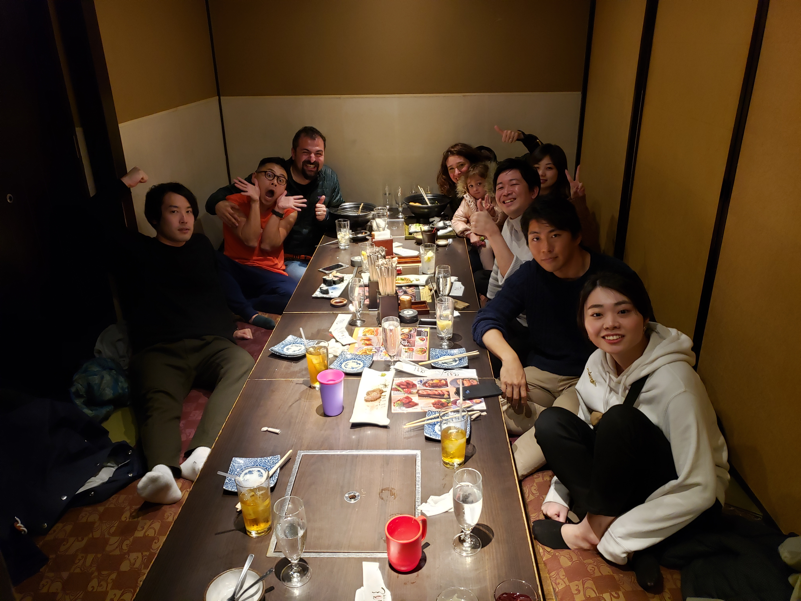

Our Japan trip back in 2019 is by far the best vacation we have ever had. This was the first time that we were visiting this awesome country and it was a total different experience. People, food, history, society, technology.. Almost all dynamics with this country were amazing. We stayed with our lovely friends in Tokyo. They were locals and with their help we literally discovered a lot of things. We travelled to Tokyo, Kyoto, Osaka and Hiroshima.

After my Japan trip unfortunately I cannot eat sushi or sashimi anymore in US. If I eat, I am expecting the same taste and quality everytime. Sashimis were so tender and the taste was amazing. I met with different sushi masters and talked with them about the fish types and their correlation with their Japanese culture. At the end of the day there is nothing better than eating a good sushi with Asahi Dry beer.

Japanese people are extremely friendly, open minded and helpful. Most of them can speak English a little bit but they always want to communicate with you and they want to know more about you. In a restaurant while you are eating your delicious soba, a group of people sitting next to you can come to your table and talk with you for hours :) This was so fun. 
Technology in Japan is completely in different level than the rest of the world. Even their toilets are all electronic and fancy ones, yes even the public toilets as well. Robots are at the streets sweeping cleaning all the time. There millions of fancy and complicated vending machines all around the country. There are supersonic wordl's fastest trains Shinkansens all around the country and public transportation is extremely fast and reliable.

Unfortunately Japan is really expensive. You just cannot buy even a simple sneaker :). They have good quality and unique products. They have totally different products then here but at the same time they are very pricey. You need to spend at least $500 to $700 for a unique sneaker or some jacket. Almost nothing is cheap in Japan especially in Tokyo and Kyoto. However it was worth it!